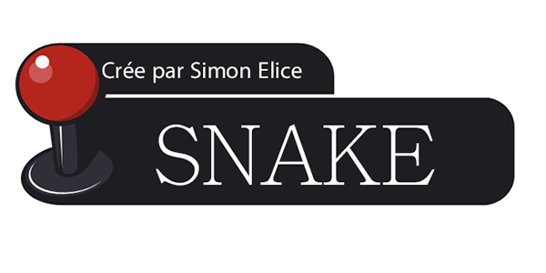

Quels sont les règles du jeu ?
Règle n°1 :
Le joueur doit prendre le plus de pomme pour avoir un score élevé
Règle n°2 :
Le serpent ne peut pas toucher les limites du terrains.
Règle n°3 :
Le serpent est dirigé avec les flèches directionnelles.
Règle n°4 :
Lorsqu'une pomme est mangée une nouvelle pomme apparait aléatoirement sur le terrain, et tout les 10 points ,le serpent va plus vite.
Retour